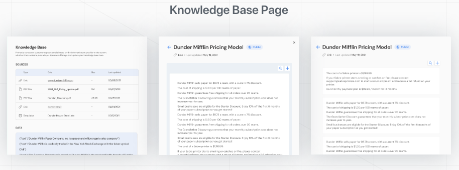

AUTOMATED EMAILING WITH PROMPTLY
ROLE
Product Designer
Designing an AI-powered automated email reply plugin for customer service reps
TEAM
Han Wang (Developer), Maggie Ying (Designer)
TIMELINE
April to May 2021
EMAILS TO START THE DAY
Han, the developer on the team, sifted through many emails each morning for his startup, Peple. The emails often asked the same things, how do I setup your product? How much is it? It was apparent that answering these emails became a pain point in his day.
So, we started thinking...how might we streamline companies' communication with customers?
CHATTING WITH COMPANIES
We designed and build a minimum viable product (MVP) in just two weeks to quickly get user feedback on the product direction of our tool. I spoke with small to medium sized companies with customer support teams.
On a whim, I suggested that we train the AI model using information about Dunder Mifflin from “The Office”. The demo was designed for users to ask questions as if they were communicating with Dunder Mifflin’s customer service reps themselves. With just a landing page and the interactive demo, we launched Dunder Email on Product Hunt.
Key Findings- Smaller companies lack centralized documentation
- Many emails contain requests, not just inquiries
- Customer support has a strong emphasize on fact checking and user feedback
- Tools should not replace customer service teams, but rather streamline their workflow
COMPANIES ARE STRETCHED TOO THIN
Small business owners and customer support representatives spend time answering questions that have already been answered on their wesbite, documentation, or in previous emails. This is process is tedious and takes up valuable time that could be used for other CRM initiatives.
Businesses want to provide their customers with consistent support but:
- Referencing the company knowledge base can be tedious
- Answering the same questions again and again isn't productive
- Responding to emails takes time away from infrastructural changes
ONE AND DONE
It seemed that users were most frustrated with completing the same task over and over again. During product ideation, my goal was to condense the user journey into just one step.
The result is for users to upload or edit this information one time in a knowledge base –– analogous to a small library with information specific to that company. The AI model would be trained on this information to intelligently respond to any customer's inquiries, from the company's store hours to the pricing model.
INTEGRATING WITH GMAIL
My goal was to leverage Gmail features, such as folders and plugins to my advantage. I iterated on different entry points for users to interact with.
The challenge was making a tool that was compatible with existing CRM tools. I considered many entry points to the dashboard, including:
- A separate desktop website
- Chrome extension with separate dashboard
- Chrome extension with integrated dashboard
Ultimately, Gmail integration made the critical user journey the shortest and most straight forward.
Users can directly manage their dashboard from the Gmail webpage, lowering the barrier to editing the knowledge base.

MANAGING THE KNOWLEDGE BASE
I also iterated on how users can update and view existing information. The biggest obstacle was portraying large amounts of information in a neat and comprehensible format.
 Final DesignThe final design represents information as individual "entries" to help organize information in smaller, digestible parts. Users can upload a variety of different formats such as a file upload, text entry, or a data lake.
Users can reference this page as a "source of truth" for all company information.
Presenting Promptly to the world
For the branding, I wanted to highlight the easy of automation and the seamless integration of Promptly into users' existing workflows. I created graphics featuring the Gmail integration, the Promptly knowledge base, and the features for adding new entries.
READ MORE ON PROMPTLY